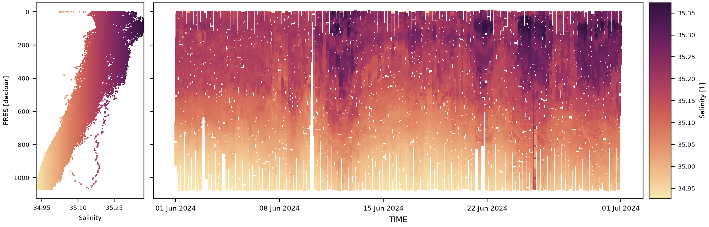
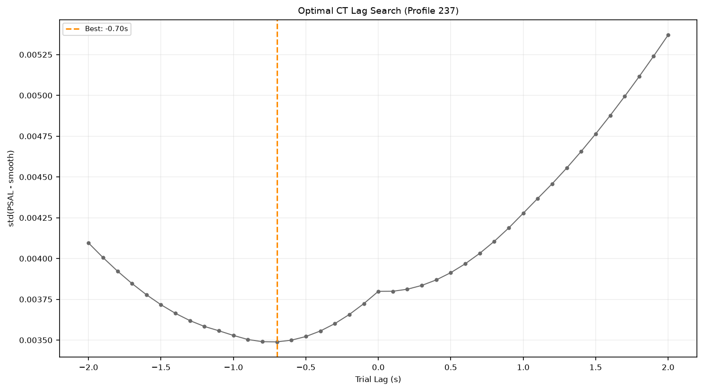
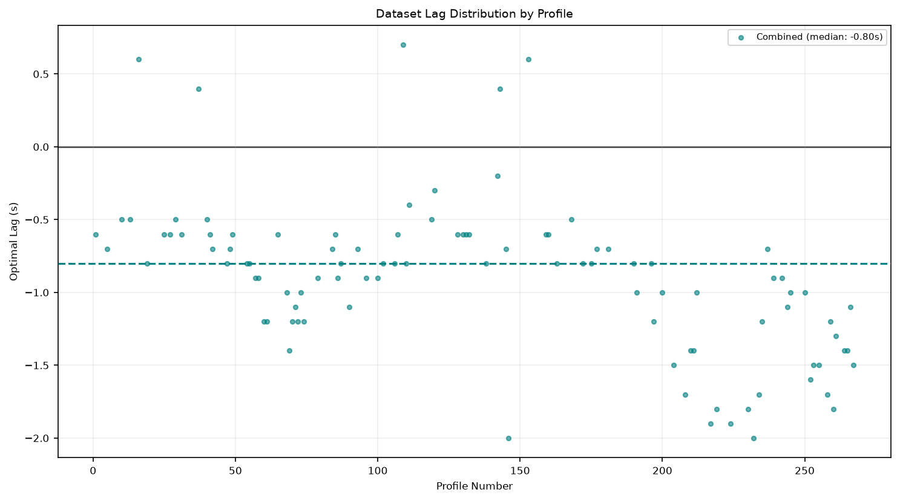
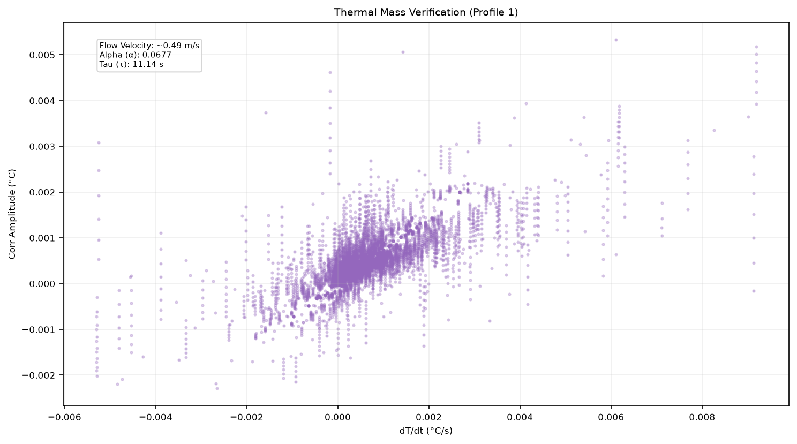
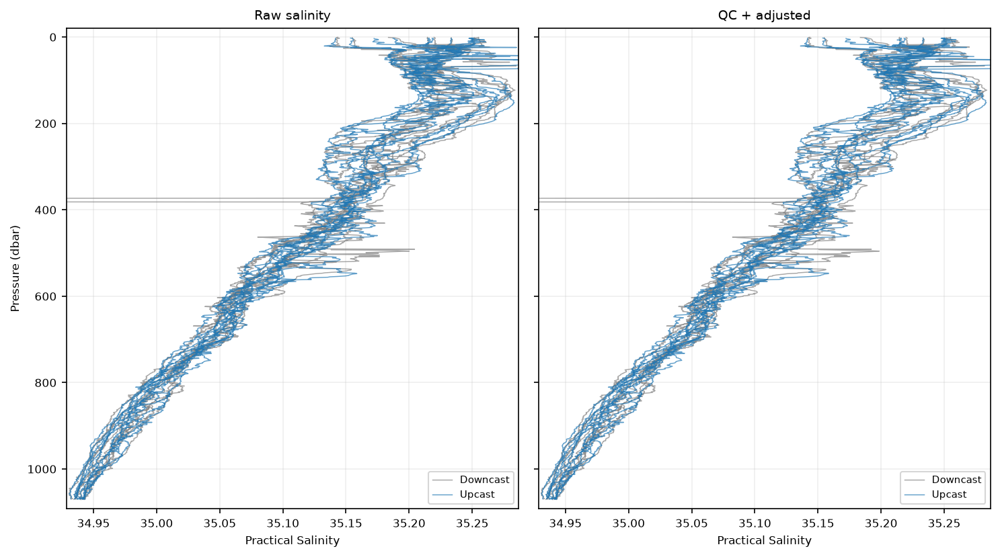

Salinity Adjustment#


Overview#
Practical salinity is not measured directly by a glider CTD; it is derived from conductivity (CNDC), in-situ temperature (TEMP) and pressure (PRES) using the practical salinity equation. Because conductivity and temperature are measured by physically separate sensors with different response times, and because the conductivity cell itself stores and releases heat, the raw CNDC/TEMP pair is not perfectly synchronised in time or thermally equilibrated. Left uncorrected, this produces characteristic salinity spiking at sharp temperature/conductivity gradients (e.g. at the thermocline) that is a sensor artefact rather than real water-mass structure. Note that this correction should be applied to pumped CTDs; umpuped CTDs still need to be included in the processing.
pelagos-py addresses this with the Salinity Adjustment step (AdjustSalinity), which applies two sequential corrections directly to the raw sensor records, ahead of practical salinity being derived:
Conductivity–temperature lag (C–T lag) correction —
correct_ct_lag()— estimates the optimal time shift needed to align the conductivity record with the temperature record, following the profile-based lag-search method of Woo (2019), and applies a single dataset-wide median shift toCNDC.Thermal-mass (thermal lag) correction —
correct_thermal_lag()— reconstructs the in-cell water temperature using the fixed-coefficient recursive filter of Morison et al. (1994), correctingTEMPfor the conductivity cell’s own thermal inertia.
Both corrections are applied to working copies of CNDC and TEMP, and practical salinity is derived from the corrected pair and written to PSAL_ADJUSTED. The dataset’s CNDC and TEMP are left unchanged. Derive CTD does not overwrite an existing PSAL_ADJUSTED, so this step is normally run early in the pipeline, before the other salinity-dependent derivations and any subsequent QC on salinity.
This document focuses on the two correction methods themselves — their physical rationale, the exact algorithm implemented, and implementation details/limitations that a user should be aware of before applying them to a new deployment or platform.
1. Conductivity–Temperature (C–T) Lag Correction#
1.1 Physical basis#
CNDC and TEMP are sampled by separate sensor elements with different response times. At a sharp vertical gradient this time mismatch means the CNDC value used to compute salinity at a given instant corresponds to slightly different water than the simultaneously-recorded TEMP value, producing spurious salinity spikes that track the gradient rather than any real feature.
correct_ct_lag() corrects this by shifting the conductivity time series relative to temperature/pressure by a fixed number of seconds, chosen to minimise the spikiness of the resulting salinity record. The underlying assumption is that the correctly time-aligned CNDC/TEMP pair produces the smoothest plausible salinity profile; spikiness is used as a proxy for misalignment, following the method described by Woo (2019).
1.2 Algorithm as implemented#
For each unique PROFILE_NUMBER in the dataset:
Qualification. A profile is only used to estimate a lag if it spans more than one hour and contains more than
3 × filter_window_sizesamples.Sampling. Profile numbers are visited in a random order, and processing stops once 100 qualifying profiles have been processed, regardless of how many qualify in total. For deployments with more than 100 qualifying profiles, this means only a random subset actually informs the lag estimate.
Per-profile masking. Within the sampled profile,
CNDC,TEMPandPRESare set toNaNwherever any of the three carries a QC flag incalculation_flag_filter(default: probably bad3, bad4, missing9) — i.e. a sample flagged on any of the three inputs is excluded from all three for this step.Optimal lag search (
compute_optimal_lag), for each qualifying profile:Conductivity is scaled to the units
gswexpects (mS/cm), inferred from theCNDCvariable’sunitsattribute (assumed S/m if unset).A linear interpolant of
CNDCagainst elapsed time is built (this interpolant returnsNaNoutside the profile’s own time range).41 trial lags are evaluated, evenly spaced from −2.0 s to +2.0 s in 0.1 s steps. For each trial lag, conductivity is resampled at
elapsed_time + lag, practical salinity is computed viagsw.conversions.SP_from_C, and a symmetric NaN-aware running-mean of that salinity is computed with windowfilter_window_size(must be odd; see §1.4).The “cost” of a trial lag is
std(PSAL − running_mean(PSAL))— i.e. how much high-frequency spikiness remains after smoothing. The lag with the lowest cost is taken as that profile’s optimal lag.If
diagnostics: true, the trial-lag cost curve and the raw/smoothed residuals for both the best lag and zero lag are captured once, for the first qualifying profile processed — not for every profile.
Aggregation. The per-profile optimal lags (up to 100 values) are collected, and
self.ct_lag_medianis set to their median. If no profile qualifies, the median defaults to0.0(i.e. no shift is applied).Applying the correction — dataset-wide, not per profile. A single interpolant of
CNDCagainst elapsed time is built from the entire dataset (using only samples where bothCNDCand the time column are non-null), anchored only at samples that are individually unflagged (calculation_mask(["CNDC"]); at least 2 such anchors are required, otherwise the correction is skipped entirely with a logged message). The working copy ofCNDCat every valid-time sample — flagged or not — is then replaced by this interpolant evaluated atelapsed_time + ct_lag_median. The same single median lag is therefore applied uniformly across the whole time series, even though it was estimated from a sample of individual profiles.
1.3 Figures#


C–T lag search for one profile: salinity spikiness, std(PSAL − running mean), for each trial lag from −2 to +2 s. The dashed line marks the lag with the lowest cost.#


Optimal C–T lag for each sampled profile (up to 100). The dashed line is the median lag, which is applied to the whole dataset.#
1.4 Default configuration#
steps:
- name: Salinity Adjustment
parameters:
filter_window_size: 21
diagnostics: false
filter_window_size (default 21, must be odd) controls only the running-mean smoothing window used inside the lag search (§1.2, step 4); it does not affect the thermal-mass correction (§2).
1.5 Implementation notes and known limitations#
Required inputs:
TIME(orTIME_CTDif present — see §1.5),PROFILE_NUMBER,CNDC,TEMP,PRES.PROFILE_DIRECTIONandDEPTHare optional and are only used to build the diagnostics QC mask, not the correction itself.Flags inform the estimate but do not stop the correction. As with the thermal-mass step, samples flagged
3/4/9are excluded from the lag search and from anchoring the correction interpolant, but the shift is still evaluated and applied at every valid-time sample, flagged or not.
1.6 TIME_CTD fallback#
If a TIME_CTD variable is present, it is used in preference to TIME throughout both corrections; otherwise the step falls back to TIME and logs that it has done so.
2. Thermal-Mass (Thermal Lag) Correction#
2.1 Physical basis#
The conductivity cell itself has thermal mass: it absorbs and releases heat as the glider moves through water of changing temperature, so the water temperature inside the cell briefly lags the ambient temperature recorded by the separate temperature sensor. This is a distinct error from the C–T timing lag corrected in §1 — it is a thermal equilibration effect, not a sensor-response timing offset — and it likewise manifests as salinity spiking correlated with the rate of temperature change, particularly across strong thermoclines.
correct_thermal_lag() corrects this using the recursive digital filter of Morison et al. (1994) (their eq. 5), which reconstructs the in-cell temperature from the ambient temperature record and a pair of fixed empirical coefficients (alpha, tau) that describe the amplitude and time constant of the thermal error for a given flow rate through the cell.
2.2 Algorithm as implemented#
For each unique PROFILE_NUMBER, independently:
Extraction and gap handling. The profile’s
TEMP/PRES/time columns are sliced out and rows withNaNTEMPare dropped, retaining a mapping back to their original indices in the full dataset. Profiles with fewer than 5 remaining timestampedTEMPsamples are skipped (left uncorrected).Usable-sample check. Of the retained samples, at least 2 must be individually unflagged (
calculation_mask(["TEMP"])); otherwise the profile is skipped. These unflagged samples alone anchor the interpolant built in the next step, though — as in §1 — the correction is still computed and applied at flagged samples within the profile.Interpolation and 1 Hz resampling. A linear interpolant of
TEMPagainst elapsed time is built from the unflagged anchors, this time withfill_value="extrapolate"(unlike the C–T lag interpolants in §1, which returnNaNoutside their domain).TEMPis then resampled onto a regular 1 Hz elapsed-time grid spanning the profile; profiles yielding fewer than 2 such 1 Hz samples are skipped.Recursive filter. Using fixed Morison et al. (1994) coefficients, $\( \tau = \tau_{\text{offset}} + \frac{\tau_{\text{slope}}}{\sqrt{U}}, \qquad \alpha = \alpha_{\text{offset}} + \frac{\alpha_{\text{slope}}}{U}, \)\( with \)\alpha_{\text{offset}}=0.0135\(, \)\alpha_{\text{slope}}=0.0264\(, \)\tau_{\text{offset}}=7.1499\ \text{s}\(, \)\tau_{\text{slope}}=2.7858\(, and a fixed flow rate \)U = 0.4867\( (from Woo, 2019), the filter coefficients for 1 Hz sampling (Nyquist frequency \)f_N = 0.5\( Hz) are \)\( a = \frac{4 f_N \alpha \tau}{1 + 4 f_N \tau}, \qquad b = 1 - \frac{2a}{\alpha}. \)\( The thermal-mass temperature error is then reconstructed recursively over the 1 Hz series, \)\( \Delta T_i = -b\,\Delta T_{i-1} + a\left(T_i - T_{i-1}\right), \qquad \Delta T_0 = 0, \)\( and the corrected in-cell temperature is \)T_i^{\text{corr}} = T_i - \Delta T_i\(. Because the recursion is reset to \)\Delta T_0 = 0$ at the start of every profile, there is a brief filter warm-up transient at the beginning of each profile during which the correction has not yet converged; the filter carries no memory across profile boundaries.
Resampling back. The corrected 1 Hz series is linearly interpolated (again with
fill_value="extrapolate") back onto the profile’s original (non-1 Hz) sample times, and written into the corrected-temperature array at the original indices identified in step 1.Diagnostics sampling. If
diagnostics: true, the \(dT/dt\) vs. correction-amplitude scatter data is captured once, for the first profile encountered that both spans at least one hour (3600 s) and has a temperature range of at least 1.0 °C over the profile — used to visually verify that larger corrections track faster temperature changes.
After all profiles are processed, the working copy of TEMP is updated: samples for which a corrected value was produced replace the original; samples that were skipped at any of steps 1–3 (too few points, too few usable anchors, or the profile did not otherwise qualify) retain their original, uncorrected value rather than being flagged or set to NaN.
2.3 Figures#


Thermal-mass correction against the rate of temperature change, dT/dt, for one profile. Corrections grow with dT/dt, so the filter acts mainly at sharp gradients.#


Practical salinity for about 20 mid-deployment profiles before (left) and after (right) QC and both corrections, with down- and upcasts in different colours. After correction the two should agree more closely; on the demo deployment the change is small (median 0.0002).#
2.4 Default configuration#
The thermal-mass correction has no independent parameters of its own — all of alpha_offset, alpha_slope, tau_offset, tau_slope and the flow rate U = 0.4867 are hard-coded constants in correct_thermal_lag(). The only user-facing parameter for the whole Salinity Adjustment step is filter_window_size (§1.3), which affects the C–T lag search only.
2.5 Implementation notes and known limitations#
The coefficients are used exactly as published by Morison et al. (1994) and are not re-optimised in T/S space for the specific platform or deployment (contrast with the approach of Garau et al., 2011, which re-tunes thermal-lag coefficients against measured T/S structure); they are treated as fixed physical constants of the recursive filter, not as fitted parameters.
The correction operates entirely per-profile: it resamples to 1 Hz, filters, and resamples back within each profile independently, so the filter’s memory does not carry across profile boundaries (see step 4 above).
Note
The flow rate
U = 0.4867is a single fixed constant applied to every sample of every profile in the dataset. Unpumped CTDs would need the flow rate derived from the glider’s velocity through the water, which is not implemented yet: no per-profile or per-sample flow rate derived from glider speed,PROFILE_DIRECTION, orDEPTHchange is computed or used. Users of an unpumped sensor, or on a platform with substantially variable flow speed, should treat the fixed-Uassumption as a simplification rather than a flow-rate-adaptive correction.
3. Outputs#
Variable |
Description |
|---|---|
|
Practical salinity derived from conductivity time-shifted by the dataset-wide median C–T lag (§1) and temperature corrected for conductivity-cell thermal-mass error with the Morison et al. (1994) recursive filter (§2). |
|
Read as inputs; never modified. |
Downstream steps read PSAL_ADJUSTED, so absolute salinity, density and other salinity-dependent variables use the corrected salinity.
4. Recommended reporting#
A scientific methods section describing salinity adjustment with pelagos-py should report:
that a conductivity–temperature (C–T) lag correction was applied, the method used to estimate it (profile-based minimisation of post-smoothing salinity spikiness, following Woo, 2019), and — since the applied correction is a single dataset-wide shift — the resulting median lag value;
that a thermal-mass (thermal lag) correction was applied using the fixed-coefficient recursive filter of Morison et al. (1994), stating explicitly whether the CTD/pumping configuration is pumped or unpumped and confirming this matches the flow-rate assumption used, given the discrepancy noted in §2.4;
which QC flags were used to exclude samples from informing (but not from receiving) both corrections.
An example methods description is given below.
Conductivity was time-aligned to temperature using a profile-based lag-search method (Woo, 2019), in which a smoothed (21-point running-mean) practical salinity record was computed for each of a sample of qualifying profiles across 41 trial lags spanning −2.0 to +2.0 s, and the lag minimising residual spikiness selected per profile. The median optimal lag across sampled profiles was applied as a single time shift to the conductivity record for the whole deployment.
Temperature was subsequently corrected for conductivity-cell thermal-mass error using the recursive filter of Morison et al. (1994), applied per profile with fixed coefficients (not re-optimised for this deployment) and a flow rate of 0.487 following Woo (2019). Samples flagged probably bad, bad, or missing did not inform either correction but were themselves corrected using the surrounding unflagged data.
References#
Morison, J., Andersen, R., Larson, N., D’Asaro, E., & Boyd, T. (1994). The correction for thermal-lag effects in Sea-Bird CTD data. Journal of Atmospheric and Oceanic Technology, 11(4), 1151–1164.
Garau, B., Ruiz, S., Zhang, W. G., Pascual, A., Heslop, E., Kerfoot, J., & Tintoré, J. (2011). Thermal lag correction on Slocum CTD glider data. Journal of Atmospheric and Oceanic Technology, 28(9), 1065–1071.
Woo, L. M. (2019). Delayed Mode QA/QC Best Practice Manual Version 2.0. Integrated Marine Observing System. https://doi.org/10.26198/5c997b5fdc9bd